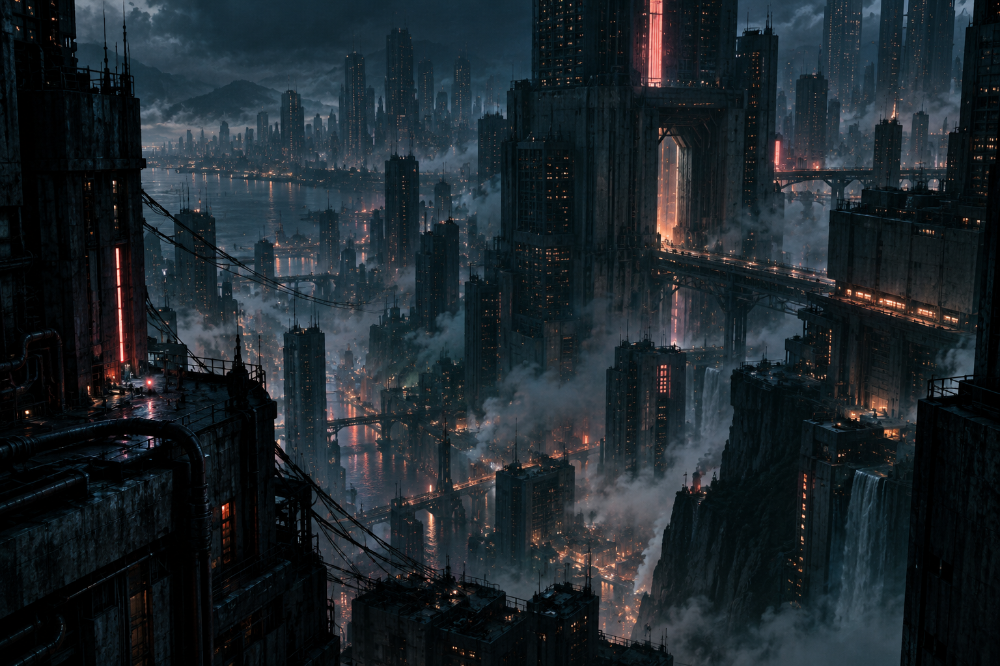
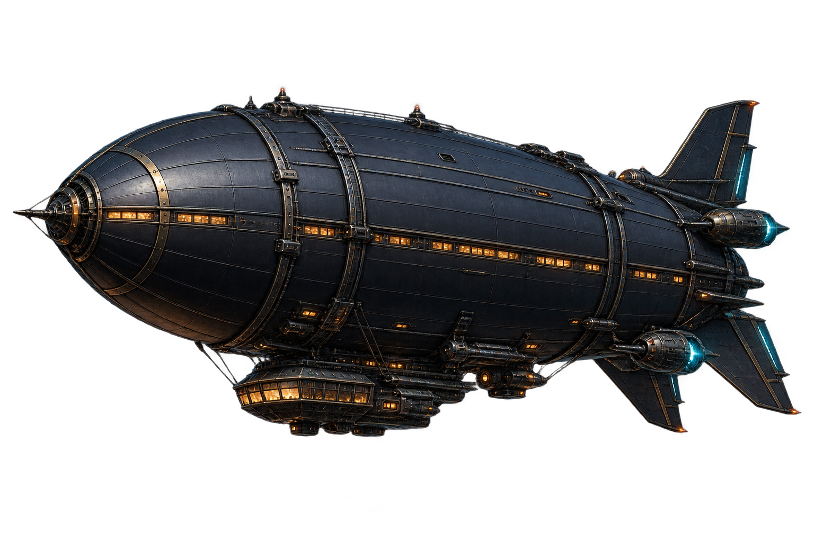

PORTFOLIO / VOLUME 01
SOGNI
AD ALTA
TENSIONE.
Tra il rumore della città e il silenzio del cielo.
Immagino mondi in cui perdersi.
ILLUSTRAZIONE · CONCEPT ART · VISIONI
SCORRI PER ESPLORARE ↓
01 / UNIVERSI VISIVI
Altrove è qui.
Due visioni di un futuro sospeso.
Entra, osserva, lasciati attraversare.
02 / DIETRO LE VISIONI
Un piede nel presente.
L’altro nel possibile.
Mi affascina il punto in cui la tecnologia incontra la fragilità umana. Città che non dormono, cieli abitati, bagliori nel buio: il cyberpunk è il linguaggio con cui esploro ciò che potremmo diventare.
NOVA✳